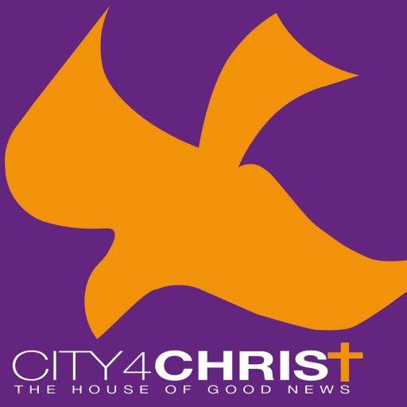

Welcome to City4Christ
Sign in to securely sync your study notes and progress.
Sign In
Forgot password?
Need an account? Sign Up

The House of Good News
City4Christ Bible Study
Share Progress
Export Notes
Log Out
0 of 30 Days Completed
0%
All Days (30)
Phase 1: Gospels
Phase 2: Acts & Paul
Phase 3: Final Letters
🙏 Prayer Line & Website
📞 01273 021777
🌐 city4christ.org